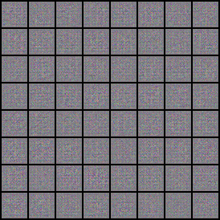

Deterministic inference
Seeded generation makes the same checkpoint reproducible.
Portfolio project for reproducible generative modeling
A DCGAN training studio that treats generated images as artifacts: inspect the data, train with fixed seeds, save atomic checkpoints, and explore the latent space without inventing quality claims.

What a reviewer can inspect
The repository separates data loading, model definitions, training, inference, evaluation, checkpoint persistence, and the Gradio surface.
Seeded generation makes the same checkpoint reproducible.
Training saves locally before any remote registry step is attempted.
FID warnings and smoke labels avoid overstating model quality.
Tests cover data validation, inference, storage, SQL, and training.
Artifact explorer
These assets were generated locally from the repo's own commands on a tiny synthetic dataset. They prove the training and inference surfaces are wired end to end.
Architecture
WGAN-GP can be added later because the DCGAN path is already split into data, model, training, inference, evaluation, and persistence layers.
Validate folder datasets before training and surface corrupt or undersized files.
Normalize inputs to match generator output and separate discriminator/generator steps.
Save model, optimizer state, config, metrics, and hashes through atomic writes.
Generate by seed, interpolate latent vectors, save history, and inspect configuration.
Run locally
The repository keeps the quick path short so reviewers can verify the mechanics before spending time on a longer CIFAR-10 run.
uv sync --extra dev && npm installuv run gan-studio train --quick-cpuuv run gan-studio uiuv run ruff check .
uv run pytest
npm run typecheck:scripts
npm run verify:siteHonest limits
The committed artifacts are smoke-test outputs. They verify the local path for sampling and generation, but they are not presented as a trained model result.
A publishable result still needs a real CIFAR-10 training run, representative FID, TensorBoard review, and sample-grid comparison across checkpoints.
Review the repository and roadmap